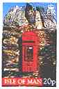
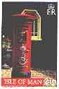

 |
|
 |
 |
|
 |
- Victor, thank you for your response. I am a novice collector, but have an enormous appreciation for art, and look forward to learning more. You web site is spectacular, by the way, a museum in itself. I enjoy walking through the galleries. Thank you again. I look forward to participating in the club. Barry N. 1/10/00.
- You did a splendid job by creating such a fantastic website. I stopped my Rembrandt collection for many years. But now through your website, it gives me fun again. I can extend my collection on a very simple basis not only by meeting local people, but worldwide. Thanks for your art craft! André B. 10/16/00
- You have a wonderful homepage. I've been a dozen of times on it and have always found something new for me (I like to read about artists and to see what stamps are dedicated to them). Enrico A., 1/21/00.
- The site has been very useful to me; I have been following it for some time, and the development has been amazing. Isaias C.M., 1/24/00.
- This is a conservative site. I use the word "conservative" in a good way. You seem to have picked from the best stamps worldwide to illustrate. I especially like the page you gave your wife on her birthday. John Y. F. 2/9/00.
- I think it's a wonderful and big work done here. Thank you very much. It is very educational. Anna K. / I admire your work greatly, in its scope it is unique in the world to my knowledge. Wim v. D. 2/20/00.
- That's a nice tribute to his most recent stamps, Victor. A sad day for modern art. William S., 2/21/00. (Published on RCSD, as an answer to my posting announcing the Hundertwasser's death and a page dedicated to his work.)
- The work you are doing for this site is extremely respectable. Melih S. 3/5/00.
- Ich freue mich über das neue Erscheinungsbild der Homepage (I like the new presentation of the homepage). Hans-Juergen, 3/8/00.
- Very interesting and helpful, especially for beginners in this theme. Michael S. 3/9/00.
- Please permit me to congratulate you and your staff for the magnificent Web-Site that you created and so beautifully maintained. 3/17/00. Accept my admiration and "felicitation" for your outstanding Web-Site. It is unbelievable what one man can create! Francis K. 3/21/00.
- Your site is one of the best we've seen in our search. We love your work. Everyone in our office in San Francisco raves about your site! Rachel R. 3/10-18/00.
- C'est la deuxième fois que je visite votre superbe site. J'y prends toujours autant de plaisir ! Félicitations aussi pour l'étude sur la Maja nue ! Pierre C. 4/7/00.
- The site looks very well laid out. I'll visit this site again! Michael B. 4/8/00.
- Your displays make me want to collect those stamps. Thanks for the tour. Thomas L. 4/11/00. (on the philatelic newsgroup RCSD).
- I was happy to find this site because I have a friend who collects Paintings on stamps. I am doing some research for her. A.M. 4/12/00.
- I have visited your site and find it very beautiful and interesting. Thank you for your wonderful, inspirational and informative site. Arqaluq L. 5/7/00.
- I think this site is very useful for all arts stamp collectors. Thanks so much to the designer and to the PASIC founder. Zheng H. 5/15/00.
- Beautiful site, images and good quality information. Congratulations for your idea and thank you to exist. Marcio K. 5/17/00.
- I am a stamp collector and I am always looking for good, new sites. I found yours, and I think it's one of the better that I have seen. I like your site and the information you have there is really well laid out. I want to write about your web site... Michael M. 6/6/00.
- The site is wonderful. I have not joined the Arts on Stamps Internet Club because primarily I collect Circus and Mythical Animals. But I find it hard to resist some of the marvelous works of art depicted on stamps. Ruth S. 6/17/00.
- Felicitaciones. Su esfuenzo es invaluable para los coleccionistas de estampillas de todo el mundo, en particular para los de paises como el mio no cuentan con la posibilidad de acceder a la informacion. Daniel L. 6/21/00.
- I love this site, I learned a lot from it. Thank you! Anna K. 7/6/00.
- I find this site truly impressive. It is full of great stamps and when you see them, you really want to become a stamp collector. Rodrigo F. 7/8/00.
- I am sorry for haven't accessed this site earlier. It's simply wonderful. Now , I will more concentrate myself on my stamp collection. N.B. Your web site is very impressive, it is real pleasure to see it. Bill V. 7/18/00.
- I think it's an important site... for the universal culture. Cecilia F. 7/24/00.
- I find this site beautiful, especially the gallery part. The flower paintings you show are outstanding. What a nice idea to make your site in several languages. Avram R. 7/25/00.
- Très beau site que je viens de découvrir. Jean-Marie P. / Great Site, easy to read and find topics. Thanks! Cheryl T. 7/27/00.
- Very nice site. Very professional. Bruce R. / Am fost foarte surprins sa gasesc un site exact pe tema mea. Sunt impresionat. Nici nu stiti ce bucurie mi-ati facut. (I was very surprised to find a site covering exactly my topic. I'm very impressed. You cannot imagine what a pleasure you made me). Andrei C. 8/8/00
- I am excited seeing your site. Your effort is fantastic. I wish to learn the process of cataloging, preserving and expanding my collection. And first of all I wish to become a member of PASIC. H.S. 8/20/00.
- Hola Victor, hace muy poco tiempo que colecciono sellos de pinturas, pero es un tema apasionante y a la vez permite aprender sobre arte. Gracias por tu pagina. Joaquin S. 8/28/00.
- I think that this is a wonderful site! Robert. / As usual, a fantastic site. André. 9/23/00.
- It really is astonishing what you did to produce so much, and moreover easily accessible information (the Arts on Stamps database - V.M.). Marjke v.d. M. 10/18/00.
- These are my first few weeks on-line and your site is very impressive. Keep up the good work and thanks for the hard work you have already put into it. Mike S. 10/21/00.
- I have looked trough the whole site - it is fantastic! Big JOB, Very big JOB! Once again I am delighted by your site, thank you!!! Victor T. 10/22/00.
- My favorite artists are Rembrandt, Monet, Cezanne and Van Gogh. I have visited this site almost every day since I became a member. Thanks for the beauties. Charles A. 11/16/00.
- Permets-moi de t'adresser mes plus sincères félicitations pour ton remarquable site : de la très grande qualité, vraiment. Didier M. 12/17/00.
- I'm sure this site will both enhance my collection, help me to get rid of my unwanted surpluses and give my ideas as to how to develop on and change the collection. David A. 12/31/00.
Thanks a lot to all of you for your kind words! Please continue to send me your opinions and suggestions. You are kindly invited to click here in order to send me a message now.
Yours truly Web Publisher and Stamp Master,
Victor Manta, at Belle Orpondia, in Switzerland.
| Revised: 12/04/08. Copyright © 1997 - 2001 by Victor Manta, Switzerland. All rights reserved worldwide. |
|
|
|
|